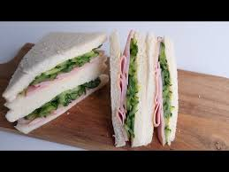

Ham, Mayo, and Cucumber

Description
simple and unpretentious, yet tasty and reliable. this little guy isn't your craziest friend, but you know he'll pikc you up if you need a lift home at 2am. two thumbs up!
Ingredients
- 6 tbsp. japanese mayo
- 4 slices shokupan
- 1 small lebanese cucumber, cut lengthways into 8 slices
- salt and pepper
- 120g (4 1/4 oz) ham, thinly sliced
Steps
- spread 4 tablespoons of the mayo over four slices of shokupan.
- lay the cucumber horizontally on the two shokupan slices. season with salt and pepper to taste. cover the cucumber with the remaining 2 tbsp. mayo.
- layer the ham over the cucumber and mayo, then top with the remaining shokupan slices, mayo-side down.
- wrap in cling film (plastic wrap) and press for 20 minutes.
- to serve, trim the cursts and cut in half horizontally.